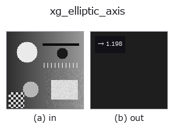

xldgeom op• Datenarten: contour → feature
• Aufruf: fullseye.apply(img, "xg_elliptic_axis", a=0.5, b=0.5) (das 2-D-Modell ist ein Bild plus zwei skalare Regler a,b∈[0,1])
• HALCON-Äquivalent: elliptic_axis_points_xld (Bedeutung und Parameter sind in der HALCON-Referenz nachzulesen)

*Die Abbildung ist die tatsächliche Ausgabe auf einer synthetischen 128×128-Eingabe. Links Eingabe, rechts Ausgabe. Punktwolken als Draufsicht-Streudiagramm (Helligkeit = z), 1-D-Reihen als Linie, Volumen als Maximum-Projektion entlang z, Videos als mittleres Bild, komplexe Bilder als Betrag; Rückgabewerte, die kein Bild ergeben, werden als Werte gezeigt.*
*Regler a ändert die Ausgabe nicht (gemessen: identisch bei 0,1 / 0,5 / 0,9).*
*Regler b ändert die Ausgabe nicht (gemessen: identisch bei 0,1 / 0,5 / 0,9).*
Stufen (die vorangehenden Ops → dieser Op, von links nach rechts):
▸ xg_elliptic_axis: stages (docs site)
Verhältnis von Haupt- zu Nebenachse sqrt(λ_max/λ_min) der Punktmenge.
> Die ausführliche Beschreibung unten ist der Originaltext — Zusammenfassung und Überschriften sind übersetzt.
全輪郭の点(閉輪郭の重複終点は除く)の (row, col) 共分散行列の固有値から、
等価楕円の長軸/短軸比 `sqrt(λ_max/λ_min) を返す。a, b` は未使用。
返り値は `numpy.float64` で 1 以上。等方な点配置で 1、細長いほど大きい。
`λ_min <= 1e-12(全点が一直線)では λ_max > 1e-12` なら 1e6、そうで
なければ 1.0。それ以外でも上限 1e6 で打ち切る。点が 2 個未満なら 1.0。
非有限になった場合も 1.0 に落とす。[0,1] に正規化されていない量なので、
他の特徴量と並べる際はスケールに注意(1e6 の外れ値が出うる)。
`xg_eccentricity` は同じ固有値を [0,1] に写した版で、こちらは比を直接
見たいときに使う。軸ではなく外接矩形の縦横比なら `xg_height_width_ratio`
(こちらは向きに依存する)。
• Leitfaden zur Familie gallery2d_geometry
• Katalog der Beispieldaten (Download-URLs / Lizenzen) — 2-D nutzt skimage.data (BSD/Public Domain) plus synthetische Bilder, 3-D nennt Download-URLs echter Datenquellen (Stanford, PDS, …).
• Herkunft und Literatur der Operatoren — die Quellen der Forschung/Verfahren, auf denen diese Operatorfamilie beruht.
• Der kanonische Algorithmus (Autor, Jahr) und seine Anwendungen stehen im Familienleitfaden oben.
Das Programm unten ist nachweislich lauffähig (gleiche Eingabe wie die Abbildung). In der Studio-Hilfe wird dieser Block zu Schaltflächen, die es sofort laden und ausführen.
threshold 0.50 0.50 sk_find_contours 0.50 0.50 xg_elliptic_axis 0.50 0.50
▸ Load this pipeline · Load & run
• gallery2d_geometry — py -3.11 examples/gallery2d_geometry.py
feature als Eingabe)xldgeom)xg_moments · xg_area_center · xg_eccentricity · xg_orientation · xg_height_width_ratio · xg_regress_contours · xg_clip_contours · xg_gen_polygons
*Provenance: ops.py — 2D Operator-Registry. Diese Notiz wird von tools/opdocs.py md erzeugt (nicht von Hand bearbeiten).*
© 2026 Kazufumi Furuse — Fullseye operator documentation. Licensed under Apache-2.0.
{kind=link}